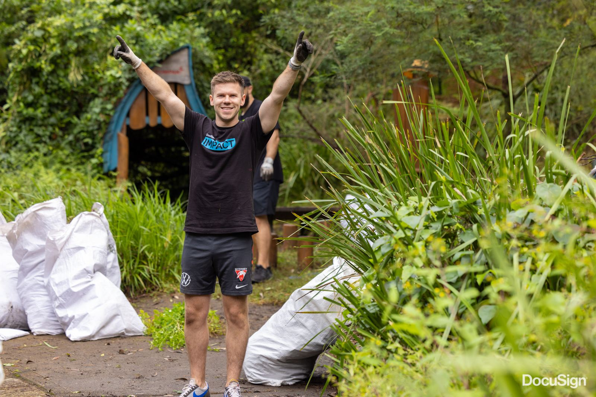
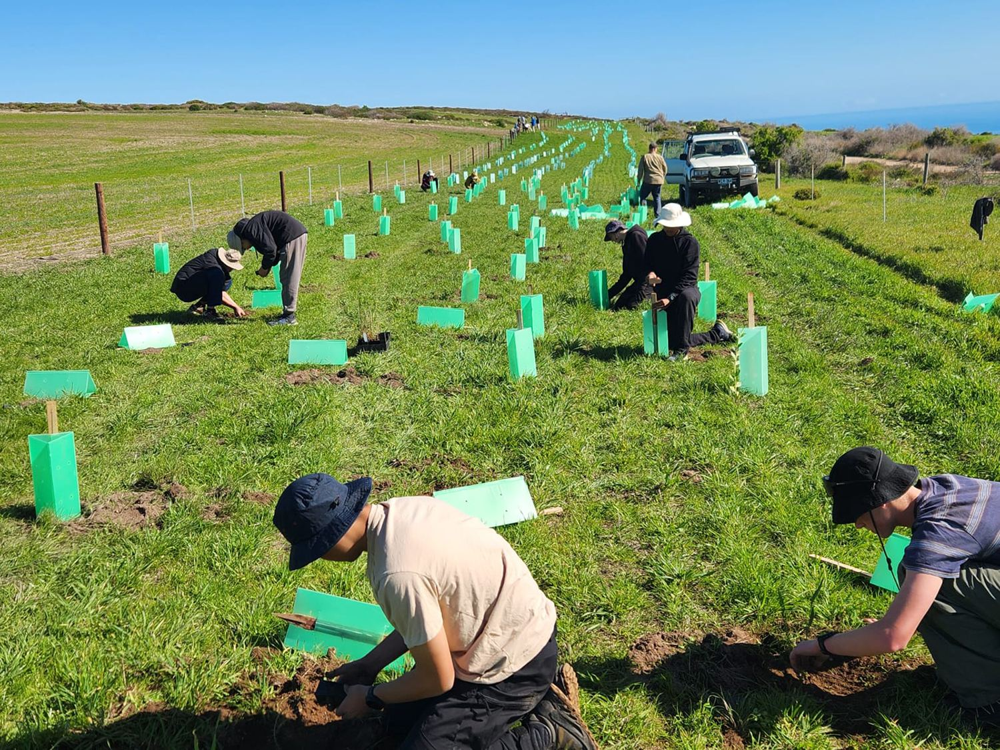
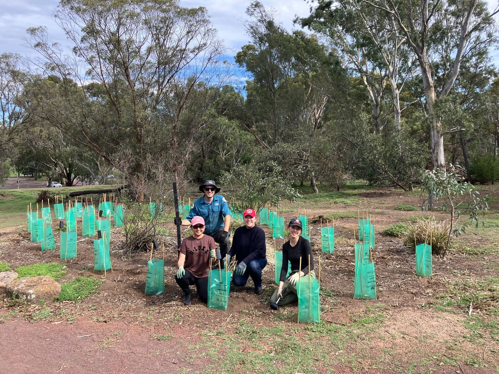
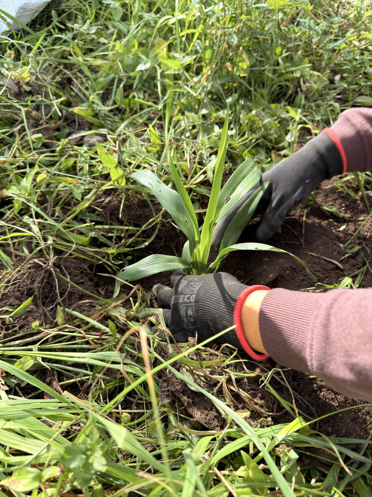

Western Australia sites
3 sites across Western Australia where your team can spend a day on the ground. 3 conservation centres, between 13 and 20 km from the Perth CBD. Pick one from the map or the list, then send us your dates from the form below.
- 3 Conservation Centres
Scroll the list or move around the map. Hover a pin to find it in the list, or tap one to jump straight to it. Click the map once to zoom with the scroll wheel.
3 sites
-
1
Kaarakin Black Cockatoo Conservation Centre
322 Mills Road East, 6110
20 km from the Perth CBD
Managed with Black Cockatoo Preservation Society of Australia
-
2
South East Regional Centre for Urban Landcare
1 Horley Road, 6107
13 km from the Perth CBD
Managed with SERCUL
-
3
The Wetlands Centre Cockburn
184 Hope Road, 6163
15 km from the Perth CBD
Managed with The Wetlands Centre Cockburn
No sites of that type in Western Australia. Choose another type, or pick All.
What a day looks like.






Ready to get into the field?
Submit an enquiry or call our team direct to chat about creating a corporate volunteering day that works for your organisation. Together, we can care for nature, strengthen communities and help shape a future where people and the environment thrive.
1800 898 626- Enquire Tell us your state, team size and rough dates.
- Choose your site Pick from the Western Australia sites above, and we confirm availability, the activity and the date.
- Logistics sorted Permits, insurance, tools, safety gear and catering, all arranged.
- Out in the field Our rangers run the day. You bring closed shoes and a hat.
Plan your volunteering day
The form is taking a while to load. Email fnpw@fnpw.org.au or call 1800 898 626 and we will take your enquiry directly.
We’ll be in touch within two working days. By submitting you consent to FNPW contacting you about your enquiry.